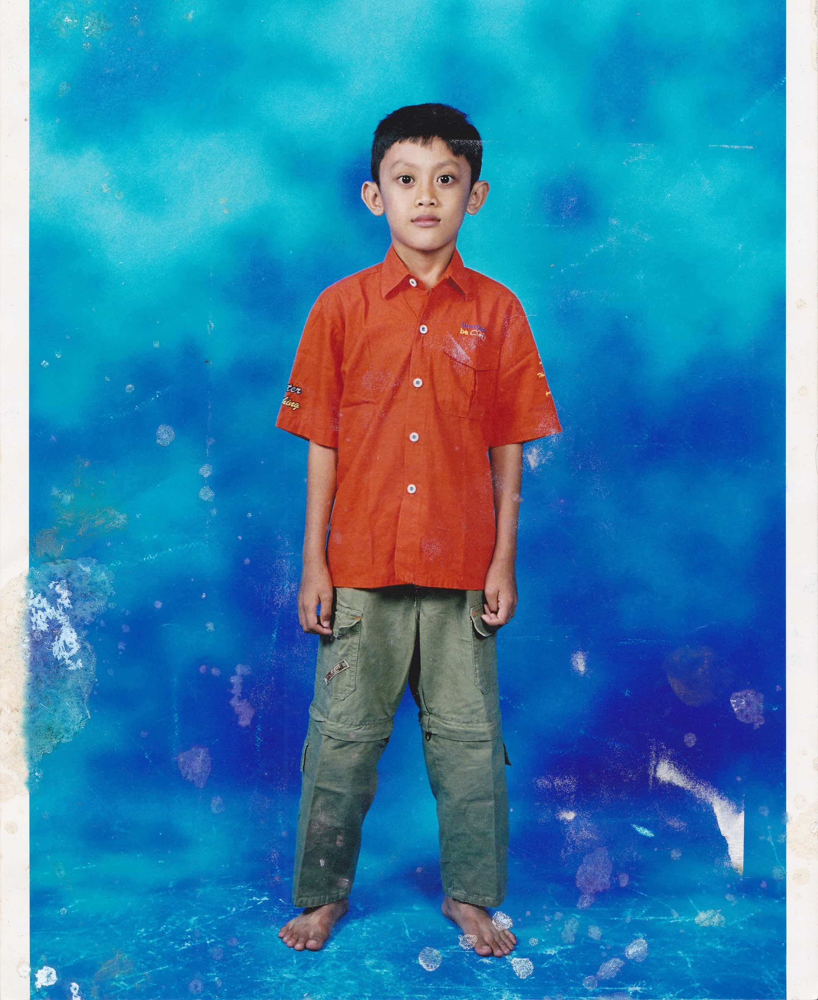

Saya dan Masa kecil
Di suatu hari ketika aku masih di Atambua, aku yang bahkan belum masuk TK waktu itu ikut bersama Ayahku ke pasar untuk membeli kebutuhan kios kami. Ketika sudah selesei dengan urusan kami, kamipun pulang menggunakan ojek
. Seperti biasanya Aku
duduk di depan pengemudi Ojek ini dan Ayahku duduk di belakangnya.
Dalam perjalanan, aku menunjukkan raut wajah keheranan karena apa yang ojek ini lalui belum pernah aku lihat, saat itu aku berpikiran, mungkin Ayahku ingin mengujungi tempat yang belum pernah aku lihat sebelumnya. Semakin lama aku semakin merasa ada keanehan di sana, dan ternyata dugaanku benar, Ayahku ternyata tidak ada di belakang pengendara ojek ini. Kami berduapun bingung dengan keadaan ini.
Syukur lah walau dengan terbatasnya informasi dariku tentang alamat rumahku, kami berhasil sampai di depan gerbang menuju panti asuhan yang masih dikelola oleh keluargaku. Tak disangka di sana ada keluargaku dan beberapa orang dari panti asuhan telah menantikan kehadiranku. Ternyata, saat Ayahku mencoba untuk menaiki kendaraan dari ojek ini, ojek ini langsung menancap gasnya tanpa bertanya dahulu, apakah Ayahku sudah siap (dalam artian, Ayahku sudah dalam posisi duduk diatas kendaraan roda doa itu) untuk diantar sesuai tujuan kami.
 Ini fotoku ketika aku menginjak sekitar kelas 1 SD, Jika kalian jeli melihat kakiku, kotor
, waktu itu aku sedang bermain bersama teman-temanku, tiba-tiba aku diajak untuk foto oleh Ayahku, Aku pun bergegas mengganti pakaianku, namun sayangnya
aku lupa mencuci kakiku.